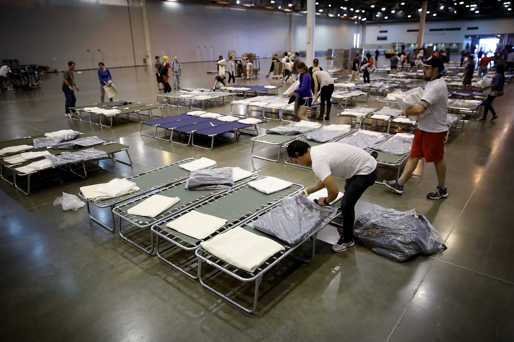

Do not go back once the fire is out. There may still be danger from smoke, ash, debris, or damaged structures. Only go back when officials say it is safe. Recovery also means supporting families and communities, rebuilding homes, and helping ecosystems recover. If your home was damaged or destroyed, contact your insurance company. Request a copy of the official fire report from your local fire department, and save all receipts for temporary lodging, food, and clothing. Take photos and videos. Remember that there are emergency shelters for people in crisis. If you need it, seek emotional support.
SAFETY
Recover After
